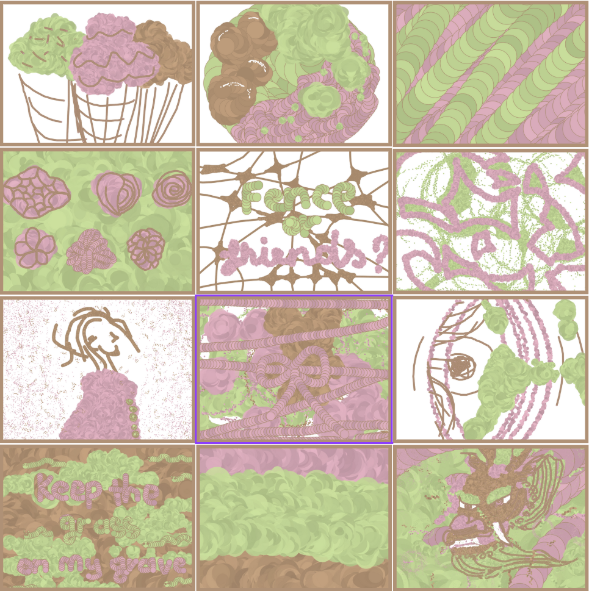

1. An articulated statement and description of the assignment based on the nature of the requirements.
This exercise required combining several different examples together, including working with sine waves, for loops, and various shape-drawing techniques. The assignment focused on learning fundamental p5.js concepts and combining them into a cohesive interactive sketch.
2. Your explanation on the assignment, in terms of the creative act and technical challenges you were asked to engage in
In this exercise, I learned to make a glittery background and use many shapes. The creative challenge was making a clone of myself with interactive elements. The main technical challenge I encountered was having the mouse-tracking running off the head, which I fixed by resetting the eyes when the mouse exceeded a certain value. After receiving feedback, I also went back and added a nested if statement to the ellipse drawing feature.
3. Your Point of view on what was successful and what could be done to improve on it.
I was successful in creating a glittery background effect and implementing mouse-tracking for the eyes. The clone feature worked well. To improve, I could add more interactive elements or refine the visual effects further.
4. Any additional text observations and additional ideas that help with making your artwork more understandable.
The sketch demonstrates basic p5.js concepts including shape drawing, mouse interaction, and conditional logic. The glittery background creates visual interest while the mouse-tracking eyes add interactivity and personality to the character.
1. An articulated statement and description of the assignment based on the nature of the requirements.
This exercise required working with external assets and implementing interactive controls. The assignment focused on creating a game-like experience using WASD controls and handling collision detection.
2. Your explanation on the assignment, in terms of the creative act and technical challenges you were asked to engage in
My idea was to use WASD to make a maze game. This came with many challenges, such as collision detection and win condition. The main problem was that my original maze was a PNG image, so I had to convert it into a maze using 0s and 1s instead, which worked successfully. This required rethinking how to represent the maze structure in code.
3. Your Point of view on what was successful and what could be done to improve on it.
Successfully converting the PNG maze into a grid-based system using 0s and 1s was a major achievement. The WASD controls and collision detection worked well. To improve, I could add more levels, better visual feedback, or additional game mechanics.
4. Any additional text observations and additional ideas that help with making your artwork more understandable.
The maze game demonstrates how external assets can be reimagined as data structures. The grid-based approach (0s and 1s) allows for precise collision detection and makes the game logic more manageable. This approach could be extended to create more complex game worlds.
1. An articulated statement and description of the assignment based on the nature of the requirements.
This project required creating an interactive drawing application using mouse input. The assignment focused on implementing multiple brush types and color manipulation, exploring creative digital painting tools.
2. Your explanation on the assignment, in terms of the creative act and technical challenges you were asked to engage in
My idea was to use the mouse to draw. I was able to make a burst circle, eraser, orbit brush, and cloud brush. The main problem I encountered was the changing color key functionality. Also finding equivalent color values in HSB (Hue, Saturation, Brightness) was a challenge, as I needed to convert between different color modes while maintaining visual consistency.
3. Your Point of view on what was successful and what could be done to improve on it.
Successfully creating multiple brush types (burst circle, eraser, orbit brush, and cloud brush) was a major achievement. My favorite creation was the dragon painting, inspired by Vietnamese dragon imagery. To improve, I could add more brush types, better color mode transitions, or save/load functionality for drawings.
4. Any additional text observations and additional ideas that help with making your artwork more understandable.
The drawing application demonstrates how different brush algorithms can create varied artistic effects. The burst circle creates dynamic explosions of color, the orbit brush creates circular patterns, and the cloud brush creates soft, organic textures. The HSB color mode allows for more intuitive color manipulation compared to RGB. The dragon painting showcases how these tools can be used to create culturally inspired artwork.

{kind=link}
{kind=link}
{kind=link}
{kind=link}
{kind=link}